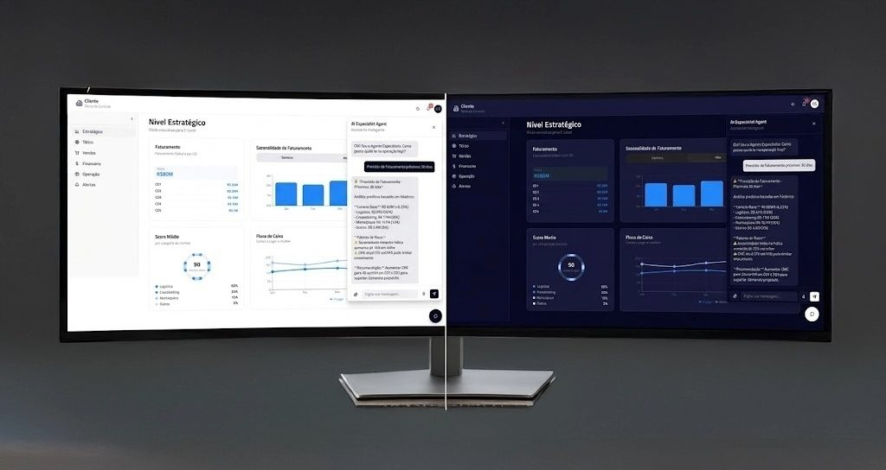

O caso
Processo &
descobertas
Em parceria com a Chronus Performance AI, desenvolvi um produto de monitoramento operacional para gestores logísticos — C-Level, Diretoria e Gerência — apresentando informações complexas de forma clara e acionáveis, com IA embarcada para detecção de anomalias, previsões, recomendações e insights.
Problema — Parte dos dados era capturada, mas não havia fluxo bem estabelecido para consumo ou intercâmbio de informação. Resultado: dificuldades preditivas, ausência de dados cadastrais e contratuais, atrasos, retrabalho, conflito entre áreas e cultura reativa aos eventos.
Solução — Melhor aproveitamento dos indicadores de performance, substituindo decisões "no feeling" por uma cultura baseada em dados confiáveis e atualizados.
- Mapeamento de KPIs end-to-end Documentação da jornada comercial completa do cliente, identificando pontos críticos e oportunidades de medição.
- Pesquisa com Especialista em Excelência Operacional Descoberta do modelo SCOR (Supply Chain Operations Reference), estrutura padrão da indústria para medir e melhorar a cadeia de suprimentos.
- Validação com Diretor logístico Uso do raciocínio SCOR como base para a arquitetura da informação, validado em entrevista com diretor sênior do setor.
- Entrevistas in loco com usuários CEO, diretores de Operação, TI e Comercial — mapeando dores reais de cada nível: controle da operação, previsibilidade de demanda, integração de sistemas, ocupação de palete, fluxos financeiros.
- Refinamento de KPIs por nível Definição clara do que mostrar ao usuário em três camadas: estratégico, tático e operacional — cada uma com sua leitura específica.
"Reduzir decisões no feeling e acelerar respostas a desvios."
Resultados
Métricas organizadas por nível tornaram o monitoramento acionável — com melhoria em tempo de decisão, acurácia de previsões, redução de incidentes e NPS interno. O C-Level passou a acompanhar receita, ARR/MRR, churn e runway; a diretoria ganhou controle de execução; as áreas operacionais otimizaram vendas, finanças e operação — viabilizando ações rápidas de realocação, priorização e tratamento de exceções.